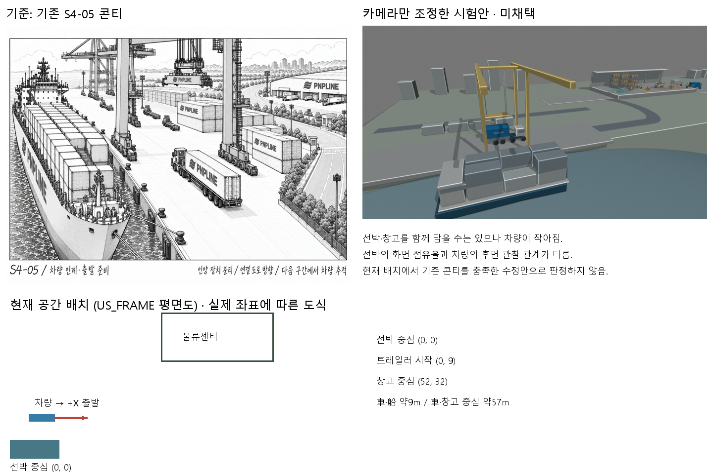
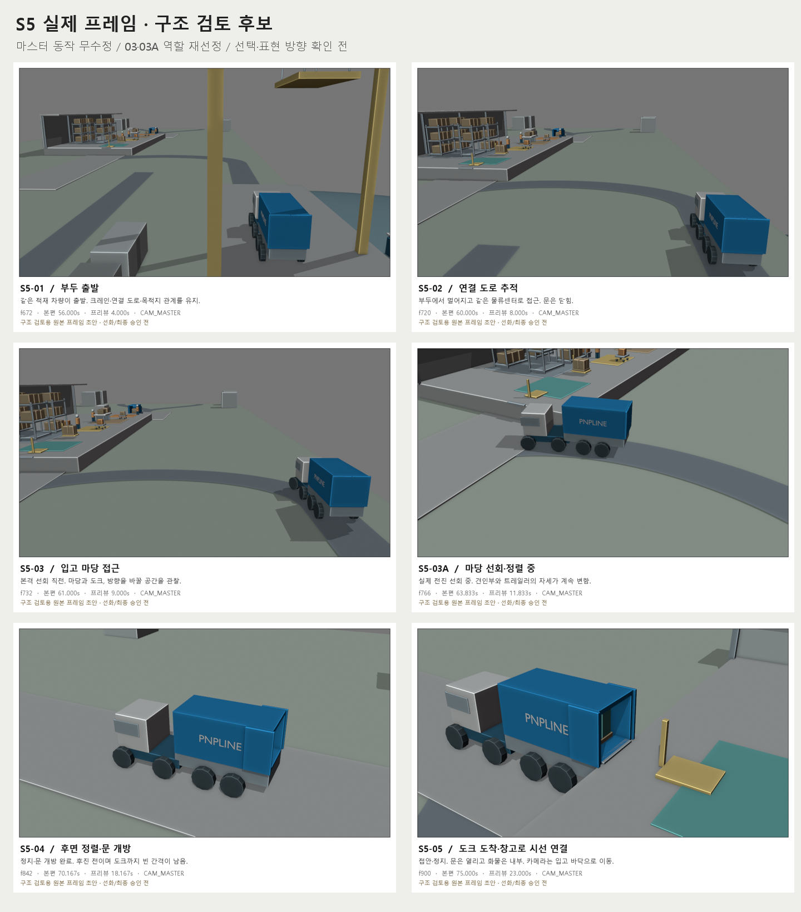
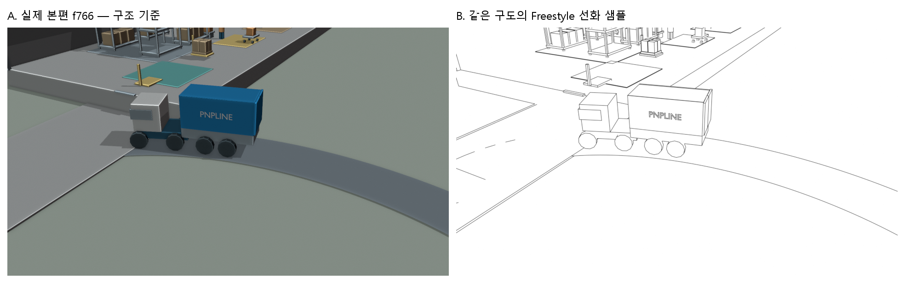

사용자의 통합 지시를 반영했습니다. 아래 자료는 이전 제안·진단 기록입니다.
f552–948 검토용. 원본 보존 · 최종 마스터 미채택. 아래는 이전 진단 자료입니다.
기존 S4-05를 기준으로 재검토하라는 사용자 선택을 반영했습니다. 아래 비교는 진단용이며 마스터에 적용하지 않았습니다.

왼쪽: 저장본 / 오른쪽: 카메라만 조정한 시험 · f552–840
아래 6장은 현재 저장본의 프레임 후보입니다. S4-05 연결 문제로 채택 보류이며 마스터는 수정하지 않았습니다.
12 fps / 원래 속도 / 27.083초 · S4 후반 → S5 → S6 첫 입고
01 f672 · 02 f720 · 03 f732 접근 · 03A f766 실제 선회 · 04 f842 · 05 f900

왼쪽은 실제 프레임, 오른쪽은 같은 3D 상태의 로컬 선화 샘플입니다. 전체 6장의 선화 작업은 프레임·스타일 선택 후 진행합니다.
